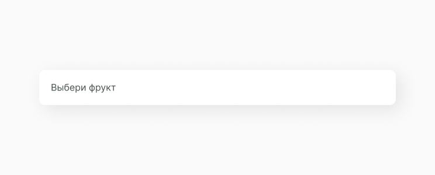
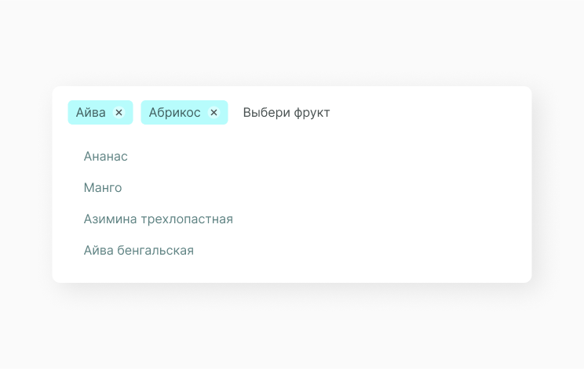

Multiselect Input
Multiselect Input это вид компонента select, который позволяет пользователю выбрать несколько пунктов из option list.
В основном multiselect input используют в различных формах входа или заполнения данных, когда нужно сделать множественный выбор при поиске по тегам или фильтрации.
Структура компонента
Multiselect input состоит из input с предзаполненным placeholder, option item который необходимо выбрать и, в выбранном состоянии, chip. Подробнее про основную структуру select.

Chip
Основа отличия multiselect input от обычного select input в том, что выбранные строки из option list выводятся в input в виде chip. Эти элементы отображают выбранный контент и имеют иконку удаления.
Состояние компонента
Исходя из структуры, мы можем выявить несколько состояний компонента с данными и без них. Заполненный input отображает не строку, а отдельный компонент или несколько компонентов в виде chip. Multiselect input изменяется следующим образом:

Затем в выбранном состоянии появляется chip. Так как выбираемая строка может быть слишком длинной, чтобы поместиться в input целиком, мы ограничиваем максимальную длину chip и срезаем выбранный текст.

Количество строк в опции может быть большим, соответственно и выбранных chip будет много. Проблема размещения этих компонентов в input решается таким образом.

Реализация
Компонент должен принимать параметры: placeholder, current selection, option list. Также мы прописываем его функциональность при выборе элемента списка и когда уже из input мы удаляем выбранный chip. Особенность этого компонента в том, что при выборе строки из массива option list мы переносим ее в массив с chip.
import React, { PureComponent } from 'react'
import A_Input from '../../atoms/A_Input/A_Input.jsx'
import A_Chip from '../../atoms/A_Chip/A_Chip.jsx'
import A_OptionItem from '../../atoms/A_OptionItem/A_OptionItem.jsx'
import './O_MultiselectInput.css'
export default class O_MultiselectInput extends PureComponent {
constructor(props) {
super(props)
this.state = {
selectedOptions: [],
disabled: props.disabled,
options: props.options,
showOptions: false
}
}
handleSelectOption = (id) => {
const selectedOption = this.state.options.find((elem) => elem.id === id)
if (!selectedOption) {
return
}
const updatedOptions = this.state.options.filter(
(option) => option.id !== id
)
this.setState((prevState) => ({
...prevState,
selectedOptions: [...prevState.selectedOptions, selectedOption],
options: updatedOptions
}))
}
handleUnselectOption = (id) => {
const unselectedOption = this.state.selectedOptions.find(
(elem) => elem.id === id
)
if (!unselectedOption) {
return
}
const newSelectedOptions = this.state.selectedOptions.filter(
(option) => option.id !== id
)
this.setState((prevState) => ({
...prevState,
options: [...prevState.options, unselectedOption],
selectedOptions: newSelectedOptions
}))
}
setVisibleOptions = (visible) => {
if (this.state.disabled) {
return
}
this.setState((preState) => ({
...preState,
showOptions: visible
}))
}
render() {
const { selectedOptions, options, showOptions } = this.state
const { placeholder } = this.props
const optionElements = options.map((option) => (
<A_OptionItem
key={option.id}
id={option.id}
value={option.value}
onSelect={this.handleSelectOption}
/>
))
const chips = selectedOptions.map((option) => (
<A_Chip
key={option.id}
text={option.value}
handleClick={() => {
this.handleUnselectOption(option.id)
}}
/>
))
const optionCollection = (
<div className="C_OptionsList">{optionElements}</div>
)
return (
<div className="O_MultiselectInput">
<A_Input
onFocus={() => this.setVisibleOptions(true)}
disabled={options.length === 0}
placeholder={placeholder}
>
{chips}
</A_Input>
{showOptions && optionCollection}
</div>
)
}
}Затем прописываем стили для multiselect input и задаем среду для остальных компонентов, которые используем. Подробнее про проектирование в изоляции можешь прочитать тут.
.O_MultiselectInput {
box-shadow: 9px 9px 35px rgba(0, 0, 0, 0.09);
margin: 20% auto;
width: 610px;
border-radius: 10px;
}
.O_MultiselectInput .C_OptionsList {
margin-top: -15px;
background-color: #fff f;
padding: 20px 20px 20px 20px;
}
.O_MultiselectInput .A_Chip {
margin: 4px 4px;
}
.O_MultiselectInput .A_InputContainer {
box-shadow: none;
flex-wrap: nowrap;
flex-direction: row;
}Мы создали компонент, но описали только его функционал, теперь его нужно отрендерить. Попробуй теперь этот компонент вывести согласно своей структуре проекта. Ты можешь увидеть как это делаем мы, а также посмотреть получившийся multiselect input.
import React from 'react'
import ReactDOM from 'react-dom'
import O_MultiselectInput from '../../components/organisms/O_MultiselectInput/O_MultiselectInput.jsx'
const options = [
{
id: '1',
value: 'Айва'
},
{
id: '2',
value: 'Абрикос'
},
{
id: '3',
value: 'Ананас'
},
{
id: '4',
value: 'Манго'
},
{
id: '5',
value: 'Азимина трехлопастная'
},
{
id: '6',
value: 'Айва бенгальская'
}
]
document.addEventListener('DOMContentLoaded', () => {
ReactDOM.render(
<O_MultiselectInput placeholder="Выбери фрукт" options={options} />,
document.body
)
})Получаем следующий результат в виде input, на который можно нажать и провзаимодействовать, выбрать chips или удалить его из input.
 Составляющие
В этот компонент часто выводятся следующие компоненты.
Chip
Интерактивный элемент множественного выбора.
Option Item
Функциональный элемент выпадающего спасска.
Этот компонент часто выводится в следующие компоненты.